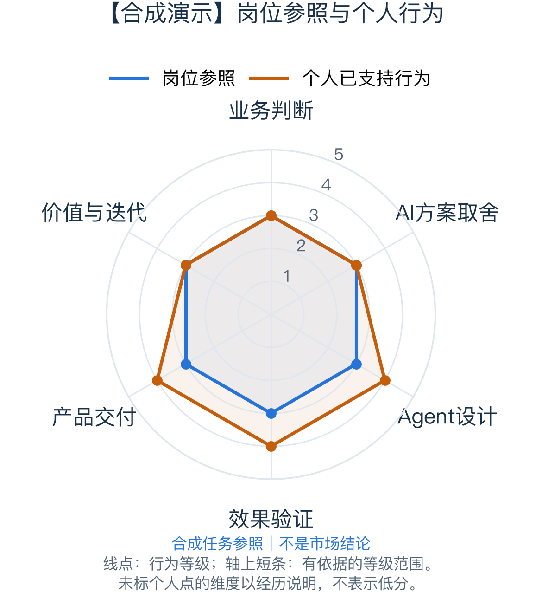

基础：闭环已经存在
5位用户连续使用4周，并有质量标准、坏例和改动复测。
岗位依据：虚构企业A
CAREER LENS
合成演示：岗位、个人经历与评分为虚构数据。
你已有小范围AI任务交付、评估和反馈闭环。用户数量小不否定这些经历，下一步应增强复杂任务举证。

全部岗位、经历和等级均为虚构演示。L3代表独立常规任务，L4代表主导复杂任务，不是录用概率。
5位用户连续使用4周，并有质量标准、坏例和改动复测。
岗位依据：虚构企业A
案例可进一步展开跨系统依赖、异常和成本判断，便于审阅复杂责任。
岗位依据：虚构企业A
先补复杂情境的过程说明，再决定是否扩大用户。
岗位依据：虚构企业A